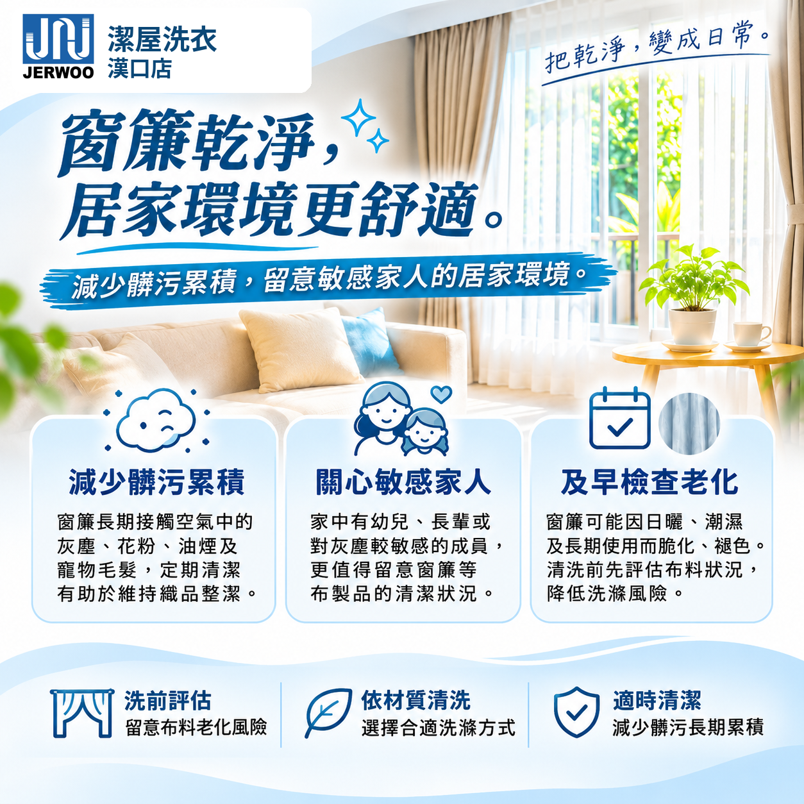

不同款式、材質分別評估
布簾、紗簾、遮光簾等須依洗標、布料結構、加工方式與實際狀況確認適合的洗滌方式。
窗簾長期接觸空氣中的灰塵、花粉、油煙及寵物毛髮，容易累積髒污與過敏原。適時進行窗簾清洗，有助於減少織品上的髒污與過敏原累積。家中若有幼兒、長輩或對灰塵較敏感的成員，更值得留意窗簾的清潔狀況。
清洗前應先檢查布料是否有日曬脆化、褪色、塗層老化等情況，再依材質評估合適的洗滌方式，以降低洗滌風險。

布簾、紗簾、遮光簾等須依洗標、布料結構、加工方式與實際狀況確認適合的洗滌方式。
送洗前，請先向原購買的窗簾店或製造廠商，確認適用的清洗方式與保養指示；相關資訊可於送洗時提供門市參考。
可能風險包括縮水、變形、褪色、塗層或背膠脫落、老化破損，以及污漬無法完全去除。正式洗滌前會確認實際報價與處理方式。
歡迎加入 LINE@ 詢問窗簾材質、試算方式與送洗流程。